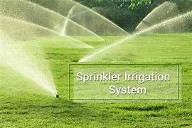
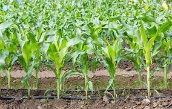

Employing efficient irrigation systems such as drip or sprinkler irrigation can help regulate water usage more effectively than traditional flooding methods. These systems reduce water wastage and ensure precise water delivery to the rice fields.
|  |  |
Constructing water reservoirs, rainwater harvesting structures, and bunds (embankments) can help capture and conserve water during periods of excess rainfall, ensuring a steady supply during drier periods.
Mulching not only controls weeds but also helps in conserving soil moisture by reducing evaporation.This practice can contribute to more efficient water usage in paddy fields.